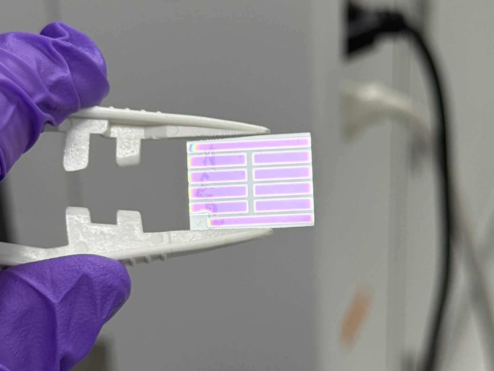
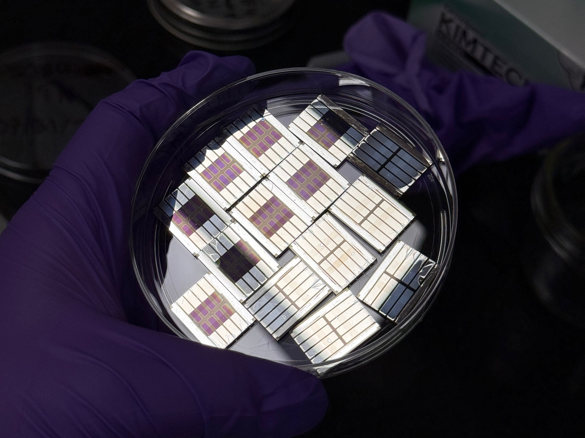

Tung Nguyen
B.S. Candidate in Electrical Engineering, Minor in Materials Science and Engineering
Stanford University
Class of 2028
How much energy is being lost, and how can we get it back?
This question motivates my two research projects. One is making perovskite solar cells that can absorb light normally transparent to them. The other is a simulation study to question whether standard assumptions and models about electro-thermal conductivity still hold in metal interconnects as they scale with modern transistor architectures.
The same question follows me outside the lab, to the Stanford Solar Car Project and Sustainable Stanford. When I'm not helping my fellow members at SSCP extract every single bit of energy out of our array for a solar-powered car to race across a continent, I'm finding ways to help Stanford save energy in its residential buildings.


Research
Perovskite photovoltaics, and heat in interconnects
In the Congreve Lab I fabricate inverted p–i–n perovskite cells and sputter the transparent contacts that let them work as semitransparent devices. In the Pop Lab I model what self-heating does to copper and aluminium interconnects as they shrink.
Projects
Arrays, buildings, and the losses in between
Characterising commercial cells for a car that has to cross a continent on sunlight, finding where Stanford's residential buildings waste energy, and building the fixtures that make a deposition repeatable.

A little more
I had zero lab experience before Stanford, and my interest has always been in sustainability through community work and policy. However, I've been interested in science and technology ever since I was a kid (as with most kids with similar interests, this started with planes and spaceships!). After trying out some EE and MatSci classes, I found a deep passion in this area of research. Now, instead of a top-down approach from policy, my work is, in a way, a bottom-up approach to sustainability: photovoltaics that can be more efficient, and interconnects that waste less energy as heat.
As much as I love being in the lab, one needs to go outside from time to time. When I'm not waiting for my deposition to finish or weighing precursors, I enjoy photography, going on side quests with my friends, and lending a helping hand to my friends at Solar Car (we're building a new car! first in over half a decade). I used to do film photography and really loved the intentionality of it, and how it forces you to slow down. Sadly the cost of film and developing is getting crazy, but I do miss it and hope to return to it soon. Also, do ask me about my cat. His name is Nấm, which is Vietnamese for mushroom — still have no idea why my sister gave him that name. He is extremely cute, and I'm very open to sharing his cuteness through pictures.
Please feel very free to reach out to chat!
Technical Skills
Member of the Stanford Nanofabrication Facility and Soft Materials Facility. Qualified user on the Lesker sputterer, Angstrom thermal evaporator, Bruker Dektak XT-A profilometer, and Agilent Cary 6000i UV/Vis/NIR. Glovebox spin coating, Keithley SMU four-point probe, solar simulator J–V characterisation, infrared and electroluminescence inspection.
COMSOL, Python, MATLAB, R, Verilog, LaTeX, Fusion 360, Onshape.
